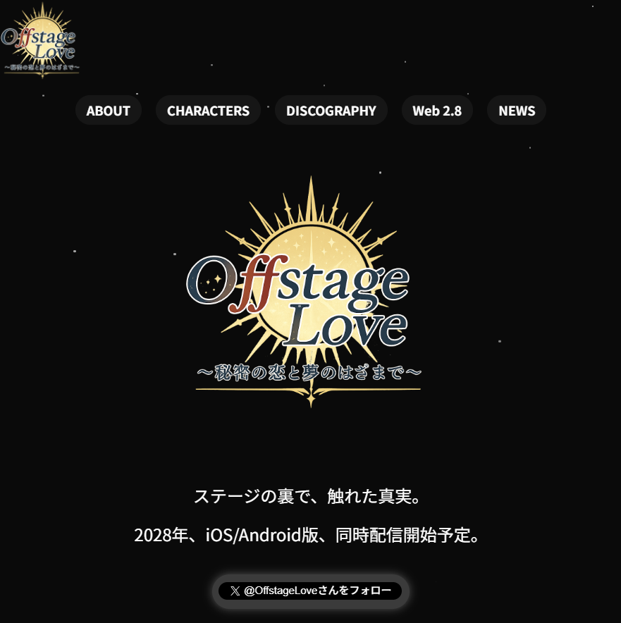

🎉 ティザーサイト公開！
このたび、乙女ゲーム『Offstage Love（オフラブ）』の公式ティザーサイトを公開しました。

※2025年8月6日現在
本サイトでは、CELESTメンバーや主人公のキャラクター紹介をはじめ、Web2.8としての取り組み、最新の開発ニュースなどをお届けしていきます。
また、ゲーム内での思い出を記録できる譲渡不可NFT（SBT）など、最新技術を活用した「推し活体験」もご紹介していきます。
今後、楽曲や世界観の情報、ビジュアルの公開、開発レポートなど、コンテンツを順次更新予定です。ぜひブックマークして、続報をお楽しみに！
NEWS一覧に戻る